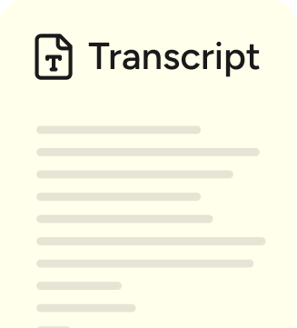

Wispr Flow Notetaker is now available on Windows and Mac.Try for free
Wispr Flow Dictation
Don’t type, just speak.
The voice-to-text AI that turns speech into clear, polished writing in every app.
Get started on macOS
Available on Mac, Windows, iPhone, and Android
Used by professionals at
4x faster than typing
Voice that finally works is here. Flow lets you create, code, message, and write at the speed of thought, 4x faster than your keyboard.
Keyboard
45 wpm
I can create a new one from scratch, or pull in something you’re
Flow
220 wpm
How it works
Speak at the speed you think, in every app, on every device.
Speak naturallyEdits as you speakUse it anywhere
Hey so um can you actually wait can you tell the team that the the launch is gonna slip I think to like not Friday the following Monday because we’re still waiting on uh legal to sign off on the the new terms page and uh yeah just let them know we’ll have a real timeline by by end of week sorry end of day Thursday
Message...
···
Cleaning up...
Flow edits as you speak
Text that reads like you wrote it, not like you spoke it. Flow automatically removes filler words, adds punctuation, and formats your writing.
Early access, real results
From the first people to use it.
“I feel like I have no time to type anymore. So I just talk to my phone and my laptop all the time.”
Elena VernaHead of Growth at Lovable
Host of Diary of a CEO
“The thought I have becomes my explanation. The gap between my thought and my delivery of my idea collapses.”
90%faster message output
2extra productive hours/day
“Wispr Flow just gets it right. It is consistently so much better than the standard voice input, it’ll blow your mind.”
Fast Company
“Wispr Flow is a top 3 favorite AI tool for me. I literally do not use my fingers to type anymore.”
Alex LiebermanCo-founder of Morning Brew
You have a way with words. Now, two.
Talk thoughts into writing with Flow and conversations into meeting notes with Notetaker. Both are in one app, free.
Get started on macOS
Products
Wispr Flow Dictation
The voice-to-text AI that turns speech into clear, polished writing in every app.
Download free

Wispr Flow Notetaker
New
AI meeting notes accurate enough to act on. Works in all meetings.
Download free
Get startedPricingPrivacy & SecurityWeb demoWhy Flow vs. Built-in DictationMicrophone guideMerch store